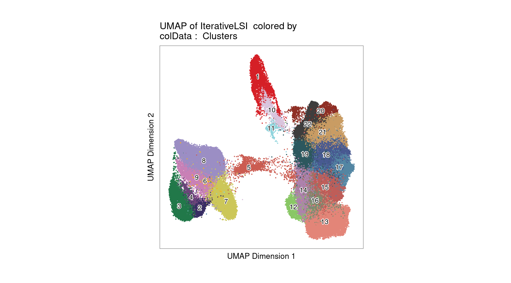

Annotating cell types for sc-multiomics dataset
Jing Gu
2025-05-13
Last updated: 2025-05-13
Checks: 7 0
Knit directory: Lung_scMultiomics_paper/
This reproducible R Markdown analysis was created with workflowr (version 1.7.1). The Checks tab describes the reproducibility checks that were applied when the results were created. The Past versions tab lists the development history.
Great! Since the R Markdown file has been committed to the Git repository, you know the exact version of the code that produced these results.
Great job! The global environment was empty. Objects defined in the global environment can affect the analysis in your R Markdown file in unknown ways. For reproduciblity it’s best to always run the code in an empty environment.
The command set.seed(20250512) was run prior to running
the code in the R Markdown file. Setting a seed ensures that any results
that rely on randomness, e.g. subsampling or permutations, are
reproducible.
Great job! Recording the operating system, R version, and package versions is critical for reproducibility.
Nice! There were no cached chunks for this analysis, so you can be confident that you successfully produced the results during this run.
Great job! Using relative paths to the files within your workflowr project makes it easier to run your code on other machines.
Great! You are using Git for version control. Tracking code development and connecting the code version to the results is critical for reproducibility.
The results in this page were generated with repository version c6723e8. See the Past versions tab to see a history of the changes made to the R Markdown and HTML files.
Note that you need to be careful to ensure that all relevant files for
the analysis have been committed to Git prior to generating the results
(you can use wflow_publish or
wflow_git_commit). workflowr only checks the R Markdown
file, but you know if there are other scripts or data files that it
depends on. Below is the status of the Git repository when the results
were generated:
Untracked files:
Untracked: ArchRLogs/
Untracked: Lung_scMultiomics_paper.Rproj
Untracked: _workflowr.yml
Untracked: analysis/ArchRLogs/
Untracked: output/u19_multiomics
Unstaged changes:
Modified: README.md
Modified: analysis/test.Rmd
Note that any generated files, e.g. HTML, png, CSS, etc., are not included in this status report because it is ok for generated content to have uncommitted changes.
These are the previous versions of the repository in which changes were
made to the R Markdown (analysis/identify_cell_types.Rmd)
and HTML (docs/identify_cell_types.html) files. If you’ve
configured a remote Git repository (see ?wflow_git_remote),
click on the hyperlinks in the table below to view the files as they
were in that past version.
| File | Version | Author | Date | Message |
|---|---|---|---|---|
| Rmd | c6723e8 | Jing Gu | 2025-05-13 | figures for section 1 |
| html | d88e89e | Jing Gu | 2025-05-13 | Build site. |
| Rmd | 44c596b | Jing Gu | 2025-05-13 | figures for section 1 |
| html | 10dd433 | Jing Gu | 2025-05-13 | Build site. |
| Rmd | c6d5a8e | Jing Gu | 2025-05-13 | wflow_publish("~/projects/Lung_scMultiomics_paper/analysis/identify_cell_types.Rmd", |
| html | 6c2b71c | Jing Gu | 2025-05-12 | Build site. |
| Rmd | 64a5871 | Jing Gu | 2025-05-12 | wflow_publish("./identify_cell_types.Rmd") |
| html | 1d50065 | Jing Gu | 2025-05-12 | Build site. |
| Rmd | 5962bce | Jing Gu | 2025-05-12 | wflow_publish("./identify_cell_types.Rmd") |
Identifying lung and spleen immune cell types
Annotate clusters in RNA-seq data with marker gene expression
UMAP for gene expression of all the cells, split by tissue of origin, with clusters annotated by CellTypist, a machine learning tool developed to predict cell types based on the expression of marker genes.
Dotplot for expression levels of CD69 and marker genes for immune subsets
Annotate clusters of ATAC-seq data with majority voting
Sample QC
COB-5 sample has a small cluster of cells with low number of
fragments, so top 5K cells ranked by number of fragments were retained.
As a result, we see more consistent distribution from the rigid plots of
TSS enrichment and log10 of number of fragments across samples.

| Version | Author | Date |
|---|---|---|
| 10dd433 | Jing Gu | 2025-05-13 |
Ridge plots for TSS enrichment and log10(nFrags) across samples show a relatively consistent distribution.
Fragment size distributions are variable across samples, but overall enriched for sizes of one or two nucleosomes
Clustering of ATAC-seq data shows no strong bias to one batch or one sample.
| Version | Author | Date |
|---|---|---|
| 10dd433 | Jing Gu | 2025-05-13 |
Clustering of ATAC-seq data also shows no distinct clusters for either tissue or disease status.

| Version | Author | Date |
|---|---|---|
| 10dd433 | Jing Gu | 2025-05-13 |
Cell composition for each cluster of ATAC-seq data
Majority of clusters were dominated by one single cell type from matched RNA-seq, while two clusters show some ambiguity and so labeled as “CD8/CD4_T” and “Th17/CD4_T”.
Loading required package: SingleCellExperiment
| Version | Author | Date |
|---|---|---|
| 10dd433 | Jing Gu | 2025-05-13 |

| Version | Author | Date |
|---|---|---|
| 10dd433 | Jing Gu | 2025-05-13 |
UMAP for ATAC-seq data from 100K cells
left plot - cell labels before majority-voting
right plot - cell labels after majority-voting 
Version Author Date 10dd433 Jing Gu 2025-05-13
Validating cell type annotations
Marker genes show high gene scores computed from nearby ATAC-seq peaks for the corresponding cluster
Warning: The `<scale>` argument of `guides()` cannot be `FALSE`. Use "none" instead as
of ggplot2 3.3.4.
This warning is displayed once every 8 hours.
Call `lifecycle::last_lifecycle_warnings()` to see where this warning was
generated.Track plots for all peaks within +/-5Kb of TSS of each marker gene
R version 4.2.0 (2022-04-22)
Platform: x86_64-pc-linux-gnu (64-bit)
Running under: CentOS Linux 7 (Core)
Matrix products: default
BLAS/LAPACK: /software/openblas-0.3.13-el7-x86_64/lib/libopenblas_haswellp-r0.3.13.so
locale:
[1] LC_CTYPE=en_US.UTF-8 LC_NUMERIC=C LC_TIME=C
[4] LC_COLLATE=C LC_MONETARY=C LC_MESSAGES=C
[7] LC_PAPER=C LC_NAME=C LC_ADDRESS=C
[10] LC_TELEPHONE=C LC_MEASUREMENT=C LC_IDENTIFICATION=C
attached base packages:
[1] stats4 grid stats graphics grDevices utils datasets
[8] methods base
other attached packages:
[1] hexbin_1.28.5
[2] SingleCellExperiment_1.20.1
[3] ggridges_0.5.6
[4] cowplot_1.1.3
[5] ggrepel_0.9.6
[6] eulerr_7.0.2
[7] liftOver_1.22.0
[8] Homo.sapiens_1.3.1
[9] TxDb.Hsapiens.UCSC.hg19.knownGene_3.2.2
[10] org.Hs.eg.db_3.16.0
[11] GO.db_3.16.0
[12] OrganismDbi_1.40.0
[13] GenomicFeatures_1.50.4
[14] AnnotationDbi_1.60.2
[15] rtracklayer_1.58.0
[16] gwascat_2.30.0
[17] rhdf5_2.42.1
[18] SummarizedExperiment_1.28.0
[19] Biobase_2.58.0
[20] MatrixGenerics_1.10.0
[21] Rcpp_1.0.14
[22] Matrix_1.6-5
[23] GenomicRanges_1.50.2
[24] GenomeInfoDb_1.34.9
[25] IRanges_2.32.0
[26] S4Vectors_0.36.2
[27] BiocGenerics_0.44.0
[28] matrixStats_1.5.0
[29] data.table_1.17.0
[30] stringr_1.5.1
[31] plyr_1.8.9
[32] magrittr_2.0.3
[33] ggplot2_3.5.2
[34] gtable_0.3.6
[35] gtools_3.9.5
[36] gridExtra_2.3
[37] ArchR_1.0.2
[38] dplyr_1.1.4
loaded via a namespace (and not attached):
[1] colorspace_2.1-1 rjson_0.2.23 rprojroot_2.0.4
[4] XVector_0.38.0 fs_1.6.5 rstudioapi_0.17.1
[7] farver_2.1.2 bit64_4.0.5 xml2_1.3.8
[10] codetools_0.2-20 splines_4.2.0 snpStats_1.48.0
[13] cachem_1.1.0 knitr_1.50 jsonlite_2.0.0
[16] workflowr_1.7.1 Cairo_1.6-2 Rsamtools_2.14.0
[19] dbplyr_2.5.0 png_0.1-8 graph_1.76.0
[22] BiocManager_1.30.25 readr_2.1.5 compiler_4.2.0
[25] httr_1.4.7 fastmap_1.2.0 cli_3.6.4
[28] later_1.4.2 htmltools_0.5.8.1 prettyunits_1.2.0
[31] tools_4.2.0 glue_1.8.0 GenomeInfoDbData_1.2.9
[34] rappdirs_0.3.3 jquerylib_0.1.4 vctrs_0.6.5
[37] Biostrings_2.66.0 rhdf5filters_1.10.1 xfun_0.52
[40] lifecycle_1.0.4 restfulr_0.0.15 XML_3.99-0.18
[43] zlibbioc_1.44.0 scales_1.3.0 BSgenome_1.66.3
[46] VariantAnnotation_1.44.1 hms_1.1.3 promises_1.3.2
[49] parallel_4.2.0 RBGL_1.74.0 yaml_2.3.10
[52] curl_6.2.2 memoise_2.0.1 sass_0.4.9
[55] biomaRt_2.54.1 stringi_1.8.4 RSQLite_2.3.9
[58] BiocIO_1.8.0 filelock_1.0.3 BiocParallel_1.32.6
[61] rlang_1.1.5 pkgconfig_2.0.3 bitops_1.0-9
[64] evaluate_1.0.3 lattice_0.22-7 Rhdf5lib_1.20.0
[67] labeling_0.4.3 GenomicAlignments_1.34.1 bit_4.6.0
[70] tidyselect_1.2.1 R6_2.6.1 generics_0.1.3
[73] DelayedArray_0.24.0 DBI_1.2.3 pillar_1.10.2
[76] whisker_0.4.1 withr_3.0.2 survival_3.8-3
[79] KEGGREST_1.38.0 RCurl_1.98-1.17 tibble_3.2.1
[82] crayon_1.5.3 BiocFileCache_2.6.1 tzdb_0.5.0
[85] rmarkdown_2.29 progress_1.2.3 blob_1.2.4
[88] git2r_0.33.0 digest_0.6.37 httpuv_1.6.15
[91] munsell_0.5.1 bslib_0.9.0